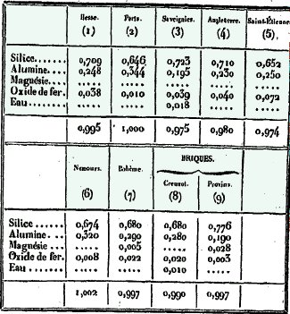
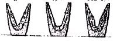
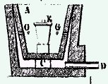
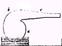
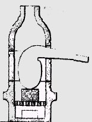

9.a. Chlorure
d'aluminium : on a vu supra
que le corindon a pu aussi être obtenu par décomposition
d'une solution de chlorure d'aluminium. Si l'on expose à une chaleur
rouge un mélange d'alumine et de charbon, puis que l'on fasse arriver
dessus du chlore, il y aura formation de chlorure et l'alumine perdra
son oxygène. On prend ordinairement de l'alumine que l'on précipite
de l'alun ; on y ajoute une matière charbonneuse très divisée
comme du sucre. Le chlorure d'aluminium est un corps jaunâtre qui
fond à une température ordinaire ; à 100°C il
se volatilise. En chauffant la dissolution, l'eau se décompose,
l'acide chlorhydrique se dégage et l'alumine reste ; ce sont les
conditions de pression
réalisées par la voie humide en tube scellé qui permettent
alors l'obtention du corindon.
9.b.
Alun ammoniacal : c'est à partir de cet alun que l'on
obtient de l'alumine pure. C'est cet alun (et non celui de potassium)
qui a été utilisé par Frémy et Verneuil
à partir de la fluorine
(spath-fluor) et de l'alumine amorphe
-voyez notre section sur le médiateur
salin. On prépare d'abord le sulfate d'alumine par attaque
d'argiles non ferrugineuses à partir de l'acide sulfurique (huile
de vitriol). Le sulfate cristallise difficilement en aiguilles et en
lames minces et nacrées. L'alun ammoniacal est obtenu par
ajout de sulfate d'ammoniaque. Fortement calciné, il laisse un
résidu d'alumine pure. On connait d'autres aluns où l'alumine
est remplacée par du sesqui-oxyde
de fer, par du manganèse ou par du chrome.
Ce sont donc des substances isomorphes et que -chose importante- on
peut retrouver au sein d'un même
cristal sans que la forme de celui-ci soit
altérée par un tel mélange. Le sulfate d'ammoniaque
s'obtient en condensant dans de l'acide sulfurique étendu, l'ammoniaque
qui se dégage, lorsqu'on chauffe avec de la chaux les eaux vannes
provenant de la fermentation des urines. La relation à l'ammoniaque
semble pouvoir expliquer quelques allégories dont nous pensions
d'abord qu'elles étaient liées à l'étain
(stannum).
Une étude plus approfondie nous conduit maintenant à envisager
l'ammoniaque en tant que tel. Nous avons déjà rencontré
le « Sal Harmoniac » dans notre commentaire d'Artephius
et surtout de Philalèthe (Introïtus,
VI). Nous pensons que la solution du sel harmoniac sophique se trouve
dans la section sur les blasons
alchimiques. D'après E. Canseliet, dans son Alchimie
expliquée sur ses textes classiques (p.168) :
"...l'autre
de l'ammoniac ; ce dernier vocable jouant, cabalistiquement avec l'harmoniac
des traités anciens, pour désigner notre deuxième
sel qui ne saurait répondre, bien
sûr, à l'ingrédient
haloïde basé sur l'ammonium, c'est-à-dire au chlorure
ou chlorhydrate d'ammoniac."
Nous avons donc des
raisons de penser que l'ammoniac doit jouer un rôle de "promoteur"
dans la constitution du Mercure philosophique. Toutefois, comme nous savons
que plusieurs procédés peuvent procurer la Pierre, il en
est certains où l'ammoniac sous une forme ou une autre, sera nécessaire
et d'autres où c'est, au vrai, le sel d'harmonie, qui seul pourra
consacrer le mariage philosophique du roi et de la reine.
è
Les vases
10.
Les creusets :
On opère la fusion
dans des vases auxquels on donne le nom de creusets
et parfois dans des cornues. Ces creusets sont chauffés dans des
fourneaux de diverses sortes selon le degré de chaleur auquel on
veut les exposer. Les creusets sont le plus souvent en argile
pure (l'ancienne
terminologie pour : kaolin) ; certains
sont constitués d'argile mêlée à des matières
charbonneuses ; de même, les creusets peuvent être nus intérieurement
ou garnis d'une brasque
en charbon. On se sert quelquefois aussi de creusets de fonte de fer et
même de platine. Nous aurons besoin des creusets les plus réfractaires
; ce sont ceux qui sont faits avec des argiles pures ou ne contenant que
quelques centièmes d'oxyde de fer tout au plus et surtout exempts
de matière calcaire. Parmi les argiles, les meilleures paraissent
être les plus siliceuses ; on peut améliorer leur infusibilité
en mêlant à l'argile un ciment absolument infusible comme du
quartz, du graphite ou du coke. Ces substances forment comme une ossature
solide qui retient par adhérence l'argile ramollie et l'empêche
de s'afaisser. On trouvera ici un tableau qui montre -au XIXe
siècle- la composition de quelques creusets.

FIGURE
X
composition
centésimale de quelques creusets, d'après Berthier, (Traité
des Essais par la voie sèche)
Berthier semble donner sa
préférence aux creusets de Paris (2), habituellement employés
à l'Ecole des Mines. Ils sont aussi réfractaires que ceux
de la Hesse et supportent les alternatives du chaud et du froid sans se
casser ; ils contiennent de la litharge en fusion pendant longtemps ce
qui est un indice de qualité. A ce propos, Berthier signale qu'autrefois,
on faisait un grand usage, en allemagne, de creusets ayant la forme de
coquetiers et que l'on nomme tutes. Le fond en est
à l'intérieur conique et très étroit, et l'ouverture
resserrée ; en sorte qu'il ne faut qu'un petit couvercle pour les
boucher. Ces sortes de creusets seraient assez commodes pour faire des
essais dans lesquels on emploie des flux alcalins ou autre très
fusibles et susceptible de se boursoufler beaucoup ; les métaux
fondus se rassembleraient dans la partie étroite au fond des creusets
et se trouveraient ainsi très nettement séparés des
scories ; mais on ne fabrique pas de tute en France et celles qu'on trouvait
en Allemagne étaient très mal façonnées.
Pour en revenir aux
creusets de Paris, un fragment de ces creusets chauffé à
1500°C dans la brasque s'arrondit un peu sur les angles sans se déformer
et prend une cassure luisante et unie du type qu'on obtient dans la poterie
dite cuite en grès : sa surface devient d'un rouge
de cuivre. Les creusets brasqués sont
des creusets de terre dont les parois intérieures sont garnies
d'une couche de charbon. On peut les considérer comme des creusets
de charbon munis extérieurement d'une enveloppe d'argile réfractaire.
Pour brasquer un creuset, on se sert de charbon de bois choisi avec soin
afin qu'il ne contienne aucune matière étrangère
; à cette fin, on le pile, on le passe au tamis de soie (il s'agit
donc de poussier de charbon).

FIGURE
XI
(le
creuset et sa brasque)
On humecte alors cette poussière
de charbon avec de l'eau, en l'agitant avec une spatule
et en la pétrissant entre les doigts jusqu'à ce qu'elle
ait acquis assez de consistance pour se pelotonner. Certains prescrivent
de mêler l'argile avec le charbon pour rendre la brasque plus solide
: on se sert de ces « brasques dures » dans les travaux métallurgiques.
On mouille le creuset en le plongeant dans l'eau et l'en retirant presque
aussitôt ; on y met l'épaisseur de 1 cm de brasque et on
tasse très fortement en frappant la brasque avec un pilon
de bois jusqu'à ce que la poudre de charbon ait acquis toute la
consistance nécessaire. Sur cette couche, on en met une autre et
ainsi, successivement, jusqu'à ce que le creuset soit rempli. On
creuse alors dans la masse de brasque une cavité conique de même
forme que le creuset ; celle-ci achevée, on en polit les parois
en les frottant fortement avec un tube de verre arrondi.
Il convient d'employer
les creusets les plus petits possibles, à rapporter bien sûr
au volume de la matière et au degré de boursouflement qu'elle
est susceptible d'éprouver. L'avantage que l'on trouve à
employer de petits creusets est dû à ce que l'on peut les
chauffer plus facilement. La brasque offre l'avantage d'opérer
la réduction
de la plupart des oxydes métalliques par voie de concentration.
Les creusets doivent toujours être munis d'un couvercle
pour empêcher l'accès de l'air et pour qu'il n'y tombe ni
cendre ni charbon. Les couvercles ont aussi pour effet de diminuer la
volatilisation. On les fait avec la même terre que les creusets
et leur forme est exactement adaptée à celle du creuset
en dépassant les bords de quelques mm. Lorsqu'on opère à
une température élevée, il faut fixer solidement
le couvercle sur le creuset. Pour cela, on le place sur le creuset et
on l'y fixe au moyen d'un rouleau d'argile que l'on applique sur les bords
et que l'on presse fortement. Cette argile doit être infusible comme
celle qui sert à faire les creusets.
Il y a des cas où
le boursouflement de la matière est tel qu'on est obligé
d'opérer à creuset ouvert, en disposant les charbons autour,
de manière qu'ils ne puissent point s'y introduire, ou bien on
le bouche en partie avec de gros charbons choisis, que l'on met par-dessus,
en travers. On a avantage à tasser les matières que l'on
introduit dans les creusets, afin de les réduire au plus petit
volume possible. On effectue ce tassement avec un pilon d'agate bien poli,
ou avec un tube de verre arrondi et l'on fait en sorte que la matière
soit bien plane ou plutôt un peu convexe. Quand, ensuite, on se
sert de creusets brasqués, après qu'on a tassé ainsi
la matière à traiter [par
exemple de l'alumine et du sulfate de potasse, ou de l'alumine et du carbonate
de potasse ou de soude], on met par-dessus
un peu de poudre de charbon que l'on comprime manuellement doucement,
puis on achève de remplir le creuset avec de la brasque que l'on
tasse fortement, couche par couche, avec un pilon. Un creuset ainsi préparé
et muni d'un couvercle bien luté [avec
des ouvertures laissées de façon que les gaz puissent se
dégager], est comme une masse
solide de charbon au centre de laquelle se
trouve la substance à traiter et il peut -en théorie- se
renverser sens dessus dessous dans le fourneau sans que cela nuise au
succès de l'opération.
On ne doit pas placer
les creusets immédiatement sur la grille des fourneaux et il est
nécessaire de les élever à une certaine hauteur.
Pour cela, on les met sur des supports auxquels on donne le nom de fromage
: ce sont des masses d'argile cuite de forme cylindrique. Pour les travaux
qui nécessitent -comme c'est le cas pour nous- une très
forte chaleur (> 1000°C), comme les creusets sont toujours couverts
par une grande masse de charbon qui les presse souvent beaucoup plus d'un
côté que de l'autre, ils seraient infailliblement renversés
; pour éviter cela, il faut les souder au fromage avec de l'argile
grasse et réfractaire, de la même manière que l'on
lute les couvercles. Quand on chauffe très fortement, il faut que
le fond du creuset soit élevé de 6 à 8 cm au-dessus
de la grille car c'est à cette hauteur qu'a lieu la plus grande
chaleur dans le fourneau ; on y arrive en employant deux fromages que
l'on dispose l'un au-dessus de l'autre ou encore un morceau de brique
taillé en cube, qui par sa forme, a plus d'assiette qu'un fromage.
Enfin, il convient de ne luter les creusets avec leur couvercle que peu
de temps avant de les mettre dans les fourneaux ; sinon, l'argile en se
déchessant, se contracterait et n'adhérerait que faiblement
au creuset : il faut alors les tenir enveloppés dans un linge mouillé
pour les empêcher de se déchesser.
Lorsqu'après
avoir placé le creuset dans le fourneau, on l'a presque rempli
de combustible non allumé, on jette par-dessus celui-ci une pelletée
de charbon de bois bien embrasé puis on achève de remplir
par du combustible noir ; on laisse dès lors le feu se propager
peu à peu par le simple tirage qui a lieu à travers la grille,
sans le secours de la cheminée ou des soufflets. Au bout d'une
heure, les creusets et les parois du fourneau sont rouge-blanc et
l'on peut commencer à donner le vent. On gradue celui-ci de quart
d'heure en quart d'heure soit en ouvrant la trappe de la cheminée,
si l'on se sert d'un fourneau à vent, soit en tournant les robinets
des tuyaux, si l'on chauffe dans un fourneau à soufflets. La figure
suivante montre un fourneau à soufflet :

FIGURE
XII
(fourneau
à soufflet)
Quand on juge que la fusion
est terminée, on cesse d'ajouter du combustible et, lorsque les
creusets sont à découvert, on les retire à l'aide
de pinces courbes ; on les
pose alors dans un bain de sable et on les laisse refroidir complètement.
Quand on ouvre le creuset, il est essentiel de tâcher de produire
le moins possible de poussière et de menus débris qui pourraient
se mélanger avec la matière [qui
correspond alors à ce qu'on appelle la pierre philosophale].
Si l'on opère dans un creuset nu, après qu'on a détaché
le couvercle, on pose le creuset horizontalement sur une enclume, en le
tenant de la main gauche par les bords, et on le frappe avec la tranche
d'un marteau dirigée dans le sens de l'axe du creuset ; de cette
manière, on arrive à diviser celui-ci en deux parties égales,
sans produire de petit fragment ; le culot métallique se détache
alors de lui-même et les scories restent seules adhérentes
au creuset. Lorsqu'on a fait le travail dans un creuset brasqué,
on en extrait la brasque peu à peu avec la pointe d'un couteau
jusqu'à ce que le culot soit à découvert ; on jette
celle qui provient des premières couches puis on retire le culot.
Le culot entier se compose ordinairement d'un culot métallique
qui occupe la partie inférieure et d'une scorie à la surface
de laquelle il y a presque toujours des grenailles adhérentes.
En concassant grossièrement le culot, on en sépare aisément
le bouton métallique [on
allait dire la pierre au rouge] et
les grosses grenailles.
Après un essai
à très haute température, on remarque que les creusets,
les couvercles ainsi que l'argile qui sert de lut, sont complètement
vitrifiés à la surface,
et que le verre qui se produit s'amasse même dans quelques parties
en gouttes souvent assez grosses. Cette vitrification est due à
l'action des cendres du combustible sur le silicate d'alumine et
elle est d'autant plus profonde que les cendres sont plus corrosives et
plus abondantes. Pour mémoire, signalons une étrange relation
où E. Canseliet, à la fin de son Alchimie expliquée
sur ses Textes classiques, dans la Grande Coction nous révèle
quelques points techniques : si nous avons bien compris -car Canseliet
s'exprime très souvent de façon « anodine »
là où pour ainsi dire se trouve terré l'essentiel-
il ne pouvait arriver à aucun résultat par voie sèche
au degré de température pratiquée, ce que d'ailleurs
il donne l'impression de confier (p.294) :
"Depuis
ce temps, au cours de plus de vingt années, à cause de
la température contraire,
nous n'avons essayé que quatre fois la réalisation de
la phase ultime, sans la réussir, mais aussi, grâce à
Dieu, sans provoquer la rupture de l'oeuf."
ainsi que cette confidence
à propos de son maître :
"Comme
l'infortuné inventeur du radium, Fulcanelli savait très
bien que le feu de son fourneau ou de ses brûleurs était
incapable de provoquer une transmutation. La sublimité
de l'arcane mit sa prudence en éveil,
et c'est pourquoi il ne dépassa pas le niveau d'argumentation
du feu secret des anciens alchimistes. C'est la raison pour laquelle
aussi, nous avons disserté, une nouvelle fois, sur la grande
inconnue de réalisation physico-chimique".
Nous avons là
un superbe trait de cabale d'E. Canseliet. D'abord, il s'agit presque d'un
aveu ; il est clair qu'aucune transmutation n'est possible. Ensuite, l'expression
« sublimité de l'arcane » renvoie directement à
la faculté de volatilisation de l'un des composants du Mercure :
l'arcanum duplicatum, encore appelé tartre vitriolé ou sel
polycreste. Quant au degré d'argumentation, c'est encore de Mercure
que parle E. Canseliet car argumenter, en grec, se dit sullogoV
[rassembler
ses esprits] ; il s'agit donc là
d'une remarque sur le lien du Mercure. Ce lien, c'est la Prudence
qui en est l'hiéroglyphe ; que le lecteur reprenne nos observations
sur cette Vertu et il mesurera effectivement, en liaison avec ce que nous
en disons dans la section sur les blasons
alchimiques, toute la sublimité de l'arcane.
11)-
les cornues :
L'appareil dont on
se sert pour pratiquer une distillation ou une sublimation se compose
d'un vase de forme particulière appelée cornue,
dans lequel on place la substance, et d'un autre vase dans lequel on condense
les vapeurs et qu'on nomme récipient.
Une cornue est représentée sur la figure ci-dessous :

FIGURE
XIII
On distingue [a]
la panse, le dôme [b] et le col [c]. On se sert de cornues à
panse profonde quand on veut opérer sur de grandes masses à
la fois ; ou quand la matière que l'on soumet à la distillation
ou à la sublimation peut éprouver des soubresauts, ou se
gonfler, ou boursoufler, etc. Le dôme doit avoir toujours pour coupe
verticale un quart de cercle afin qu'il résiste le mieux possible
à la pression atmosphérique lorsque le vide s'y fait, suite
à un refroidissement intérieur. Quant au col, on le fait
long lorsqu'on veut que les vapeurs se condensent dans son intérieur
; on peut lui donner un grand diamètre si l'on craint qu'il ne soit
obstrué par les matières qui s'y condensent. Les cornues
de verre sont très commodes ; aussi s'en sert-on toutes les fois
que l'opération n'exige pas une température trop élevée,
pour la plupart des distillations. On peut même employer les cornues
de verre à une chaleur capable de leur faire éprouver un
début de fusion, en les enduisant au préalable d'un lut
bien appliqué. Les luts servant à cet usage sont faits avec
des argiles liantes et infusibles mêlées de sable quartzeux
ou d'argile cuite pulvérisée. Le mélange doit conserver
du liant et éprouver le moins de retrait possible en se séchant.
Pour éviter la formation des fentes que la dessication produit toujours
lorsqu'elle n'a pas lieu avec une extrême lenteur, on mêle
souvent à l'argile des substances fibreuses coupées en morceaux
de 1 cm de long, telles que du foin,
de la paille, de la filasse, de la bourre, ou même du crotin
de cheval : ces substances augmentent l'adhérence et rendent le
retrait si uniforme qu'il a lieu sans gerçure apparente ; il faut
cependant n'employer ces produits qu'en petite quantité, sans quoi
le lut deviendrait très poreux et pourrait perdre toute consistance.
On applique le lut sur les cornues de deux manières :
a)-
on en fait une pâte un peu liquide, on en étend une couche
mince et uniforme sur la cornue ; on laisse sécher cette couche
à l'air puis, quand elle est sèche, on en applique une seconde
en ayant grand soin de remplir exactement toutes les gerçures ;
on fait encore sécher et l'on applique de nouvelles couches si cela
s'avère nécessaire pour que le lut ait l'épaisseur
souhaitée (< 1cm). On achève la dessication sur un bain
de sable et enfin, on bouche soigneusement les fentes qui ont pu se former
;
b)-
on fait avec le lut une pâte tenace, ductile et bien homogène
et on l'aplatit de manière à former une masse d'épaisseur
et de grandeur convenable pour couvrir la cornue qu'on veut revêtir
; on enduit celle-ci d'une légère couche d'argile délayée
dans l'eau, on la place au centre de la masse de lut, et l'on relève
ce lut avec les mains sur les parois de la cornue, contre lesquelles on
le presse en tous sens en ayant soin de bien souder les bords entre eux,
et l'on fait sécher comme expliqué au §a.
On rend les luts moins
sujets à se fendre en les enduisant d'une couche d'huile après
qu'on les a fait sécher. Pour éviter des gerçures,
on enveloppe parfois le lut fraichement appliqué avec des bandes
de toile grossière ou de la filasse, et l'on applique par-dessus
un peu de lut délayé, puis on fait sécher lentement.
De cette façon, les cornues de verre bien lutées peuvent
supporter un assez grand feu, parce que le verre conserve sa forme à
la faveur de l'enveloppe d'argile et celle-ci, quoiqu'en se contractant
beaucoup, ne se fend pas, le verre ramolli cédant à la force
de contraction.
On peut aussi se
servir de cornues d'argile, qu'on appelle cuites en grès ; on peut
rendre ces cornues poreuses imperméables aux gaz au moyen de vernis
fusibles appliqués extérieurement. Il suffit parfois de les
humecter avec une dissolution de borax. On peut utiliser un mélange
de 1 partie de borax et de 16 parties d'eau bouillante ; on ajoute à
la dissolution autant de chaux vive qu'il faut pour faire une pâte
liquide ; cette pâte est étendue sur la cornue avec une brosse
puis, quand elle est sèche, on peut appliquer par-dessus une couche
de chaux délayée dans l'huile. Il faut préalablement
à l'emploi de la cornue, chauffer cette dernière à
une chaleur suffisante pour fondre le vernis, la laisser refroidir avec
précaution et ne l'employer que si la couche vitreuse ne présente
aucuen solution de continuité. Les cornues de porcelaine sont garnies
intérieurement d'un enduit vitreux ; elles sont absolument imperméables
et peuvent supporter une chaleur très forte ; il faut toutefois
les chauffer avec grande précaution au début d'une opération
pour éviter qu'elles ne se fêlent. Le vernis est indispensable
pour éviter qu'elles ne soient traversées par les gaz et
les vapeurs.
En introduisant dans
la cornue la matière que l'on doit traiter, il faut faire en sorte
qu'il ne s'en attache pas quelque portion dans le col, surtout si les vapeurs
doivent se condenser dans cette partie car dans ce cas, la matière
recueillie ne serait pas pure. Pour cela, on emploie la matière en
petits morceaux ou en poudre grossière débarrassée
par le tamisage, de la poudre fine qui pourrait rester adhérente
aux parois du col. Si la substance est en poudre fine ou liquide, on l'introduit
dans la panse de la cornue au moyen d'un entonnoir dont la tige est assez
longue pour qu'elle puisse pénétrer jusqu'au fond de la cornue.
Pour faire des distillations et des sublimations, on chauffe les cornues
dans des fours à réverbère en les plaçant
soit sur un fromage, soit dans un creuset rempli de sable aux trois

FIGURE
XIV
quarts, soit encore
sur des barres de fer qui traversent le fourneau, mais ce dernier moyen
ne doit pas être employé si l'opération nécessite
une chaleur forte et longue, car l'oxyde de fer réagit sur la cornue
et finit par la corroder entièrement. Pour qu'une distillation ou
une sublimation s'effectue dans les meilleures conditions, il faut que
la vapeur ne puisse pas retomber dans la panse de la cornue. Pour que cette
condition soit remplie, il faut que le dôme se trouvé échauffé
à une température au moins égale à celle
à laquelle les vapeurs se constituent. S'il en était autrement,
les vapeurs qui toucheraient les parois et même une partie de celles
qui rempliraient la cornue, se condenseraient et retomberaient dans la
panse pour se vaporiser de nouveau. On observe aisément cet effet
lorsqu'on distille un liquide en ne le chauffant que par-dessous. On voit
la cornue se remplir d'une pluie fine et les gouttes provenant de la condensation
des vapeurs ruisseler sur les parois du dôme et retomber dans le
bain. Donc, dans les opérations qui se font à une chaleur
élevée, on chauffe la cornue par-dessus et par-dessous ;
plus exactement, on l'enveloppe de toutes parts de combustible enflammé
; en sorte que le dôme ne se trouve qu'à une température
très peu différente de celle de la panse ; pour des opérations
qui n'exigent pas une température élevée, comme dans
la plupart des distillations, on ne chauffe que par-dessous mais, pour
maintenir au dôme la température la plus élevée
possible, il faut munir le fourneau de son
laboratoire
complet. Quand on chauffe une cornue par en-dessous,
on peut l'enfoncer dans un bain de sable. Un autre procédé
consiste à chauffer des cornues de verre non lutées en plaçant
du charbon allumé sur une grille placée presque immédiatement
sur le dôme et on peut même les chauffer à moitié
de leur hauteur, ou à peu près au niveau de la surface de
la matière qu'elles contiennent, en plaçant à cette
hauteur une grille que la cornue traverse et sur laquelle on met du combustible
: la distillation marche alors très vite et souvent même,
il y a avantage à porter surtout le feu sur le pourtour et à
ne chauffer que modérément par-dessous ; mais alors, il faut
avoir soin de faire en sorte qu'aucun charbon ne touche à la cornue.
La condensation des vapeurs qui résultent d'une distillation ou
d'une sublimation a souvent lieu complètement dans le
col de la cornue, quand ce col est suffisamment
long et quand on n'opère pas avec de grandes quantités de
matières. Si la matière condensée est solide, elle
se dépose sur les parois du col, sous forme de poudre ou de grains
cristallins ; si elle est liquide, elle se répand en goutelettes
qui se réunissent peu à peu et ruissèlent vers la
partie inférieure du col ; et si le liquide condensé est
en quantité un peu grande, il finit par s'écouler par le
bec ; dans ce cas, on peut le retenir dans le col en courbant un peu celui-ci
vers son extrémité. Quand l'opération est terminée,
on sépare de la cornue toute la partie du col dans laquelle les
vapeurs se sont condensées et l'on en détache la matière.
Quand on fabrique un appareil distillatoire ou sublimatoire, il faut que
les différentes parties soient unies de telle sorte qu'aucun gaz
ne puisse s'échapper des jointures. On se sert pour cela de différents
luts. Voici les principaux :
a)-
le lut gras : on le prépare en battant de l'argile desséchée,
réduite en poudre fine, avec de l'huile de lin ;
b)-
le ciment romain ou chaux sur-hydraulique : on le conserve en poudre dans
des flacons bien bouchés et on ne l'éteint qu'au moment où
l'on veut s'en servir ;
c)-
le plâtre gâché avec de l'eau, du lait :
Ces trois luts peuvent
supporter la chaleur rouge sombre.
d)-
la farine de graine de lin : on la pétrit dans un mortier avec de
l'eau, du lait ou de l'eau de chaux. Ce lut ne supporte pas des températures
supérieures à 300°C ;
e)-
la chaux vive ou lut d'âne : on ajoute à la chaux la quantité
d'eau nécessaire pour la réduire en poudre sèche,
on la mélange intimement avec un blanc d'eouf délayé,
on l'étend rapidement sur des bandes de toile que l'on applique
sur les jointures, et on la saupoudre de chaux vive. Ce lut a le défaut
de n'être pas flexible ;
f)-
le blanc de plomb mêlé à l'huile ;
g)-
la cire jaune ;
la liste n'est pas limitative...
è
Opérations
métallurgiques et chimiques
12)-
Cassage : c'est diviser par le choc une masse
solide en morceaux plus ou moins gros. On concasse pour disjoindre des
substances entrelacées ou pour se procurer des morceaux de grosseur
voulue. Pour cela, on se sert de marteaux ou de pilons.
On place le morceau
à diviser sur un tas d'acier,
sur le fond d'un mortier renversé ou sur un sol résistant.
Si l'on veut éviter [ce
qui peut être le cas pour la stibine par exemple]
de diviser le minéral en évitant de produire de petits fragments,
on doit se servir de la panne d'un marteau de petite taille et frapper
à coups secs et ménagés ; si l'on casse dans un mortier,
il faut tenir le pilon verticalement. Quand on concasse sur un tas d'acier,
on place sur ce tas un anneau de fer mobile d'un diamètre plus
petit, qui entoure le morceau.
13)-
Pulvérisation : c'est réduire
en poudre une substance que l'on pile dans des mortiers.
Pour les substances dures, on doit se servir de mortiers de fonte. Les
mortiers de porcelaine ne peuvent être employés que pour
piler des substances fragiles telles que les pierres étonnées
par le feu. Les mortiers d'agate ou de porphyre ayant une grande valeur,
on s'en sert rarement pour piler. Si l'on veut réduire une substance
en poudre grossière, il faut la piler en tenant le pilon verticalement
; quand au contraire, on veut avoir une poudre très fine, il faut
tenir le pilon obliquement et triturer de temps en temps ; enfin, pour
obtenir des poudres très fines, on ne doit piler que de petites
quantités de matière à la fois. Quand une poudre
a acquis un certain degré de ténuité, il arrive souvent
qu'elle se pelotonne au fond du mortier ; dans ce cas, on accélère
la pulvérisation en la détachant fréquemment du mortier
et en la remuant en tout sens avec une spatule. Certains corps ne se pilent
que difficilement car ils ont un certain degré de mollesse : il
faut alors les mélanger à une autre substance très
cassante, du quartz par exemple. Après avoir pilé une substance,
il faut la purifier car de petites particules métalliques provenant
des mmortiers de fonte ou de bronze restent mélangées dans
la poussière. On enlève aisément la plus grande partie
des particules de fonte par un barreau aimanté. Mais, il reste
encore des particules de bronze que l'on ne peut enlever qu'en soumettant
la matière à des agents chimiques tels que l'acide nitrique
[eau forte],
l'acide chlorhydrique [esprit
de sel] ou l'eau régale. On
ne peut employer ces acides que s'ils n'attaquent pas la substance pulvérisée.
14)-
Etonnement : Il est souvent avantageux, quand
une substance à pulvériser est très dure et inaltérable
par la chaleur, de la faire chauffer et de la plonger toute rouge dans
l'eau avant de la piler ; il faut réitérer ces opérations
: la substance se trouvant subitement et inégalement dilatée
et contractée, se fendille en tout sens, s'étonne, et elle
devient tellement fragile qu'on peut alors la pulvériser par simple
pression.
15)-
Criblage ou tamisage
: les tamis servent à
séparer d'une matière concassée ou pulvérisée,
soit la poussière fine qui passe à travers le tamis, soit
les grains dont le diamètre est plus grand que la largeur des mailles
et qui, au contraire, restent dessus. C'est, en dépit de son apparente
simplicité, une opération essentielle dans le Magistère
et elle fait l'objet de plusieurs allégories et de détails
iconographiques particuliers (la Clef
VIII de B. Valentin, la planche
XIV du Mutus Liber par exemple). Les tamis à
très grosses mailles portent le nom de cribles
; on se sert aussi de tamis de de crin et de soie. Quand on veut réduire
un corps en poudre fine, on le pile dans un mortier, on le passe à
travers un tamis très serré, on remet dans le mortier ce
qui reste dans le tamis et on réitère l'opération.
Quand on veut réduire un corps en grains qui ne dépassent
pas une certaine grosseur sans pour autant produire de la poussière
trop fine, il est essentiel de tamiser le plus fréquemment possible.
On a avantage à tamiser, par exemple, un agrégat formé
de deux substances de dureté inégale [quartz
et minerai métallique] ; à
un certain moment, il reste sur le tamis une grande quantité de
la substance la plus dure tout-à-fait pure, ce qui offre l'intérêt
de diminuer d'autant la perte qu'éprouve ensuite, au lavage, la
substance la plus fragile qui est souvent la plus précieuse. On
a aussi intérêt à obtenir des grains de grosseur différente,
pour avoir des poudres de différente ténuité : il
faut alors passer la substance dans des tamis
emboîtés les uns dans les autres, auxquels on donne un mouvement
d'oscillation particulier que l'habitude fait connaître, et en les
frappant sur un sol résistant. Si la poussière qui se répand
est dangereuse ou incommode, on doit fermer les tamis par-dessus et en-desssous,
à l'aide d'une boîte qui reçoit la poussière.
On peut enfin tamiser en plongeant le tamis dans un grand vase rempli
d'eau : la séparation des poussières se fait ainsi beaucoup
plus vite qu'en tamisant à sec.
16)-
triage : Quand l'adhérence qui existait
entre les substances a été détruite -par les procédés
vus ci-dessus- on en opère le triage. Quand elles sont visibles
à l'oil nu, on les sépare en les saisissant avec des pinces
Bruxelles. Lorsque le triage
manuel n'est plus possible, d'autres moyens peuvent être employés
:
a)-
lorsque des substances sont magnétiques : on enlève la substance
par un barreau aimanté. On sépare ainsi l'oxyde de fer magnétique
des gangues ; le fer, le cobalt, des scories vitreuses dans lesquelles
ils sont diséminés ;
b)-
lorsque l'une de ces substances est très ductile et que les autres
sont cassantes : on pile et on tamise ; la matière ductile s'aplatit
en paillettes d'autant plus larges que l'on a pilé plus fortement
tandis que les autres substances sont réduites en poudre fine. On
peut alors séparer la poudre des paillettes au moyen d'un tamis
très serré à travers lequel ces dernières ne
passent pas ;
c)-
lorsque l'une de ces substances fait une pâte avec l'eau et se délaie
dans ce liquide, ou bien est en grains assez fins pour y rester longtemps
en suspension : le triage s'effectue alors par lavage ;
d)-
lorsque des substances mélangées ont des pesanteurs spécifiques
très différentes : on s'adresse là encore au lavage.
17)- Lavages
: il faut bien différencier ici les lavages classiques des «
lavages ignés ou laveures » des alchimistes. Parlons d'abord
des lavages classiques. On lave de deux manières, soit par suspension
dans une eau tranquille ou décantation [c'est
ce qu'on appelle la lévigation]
soit en soumettant la matière pulvérisée à l'action
d'un courant d'eau : c'est le lavage proprement dit.
a)-
la lévigation : elle ne peut être employée que pour
séparer des substances qui peuvent rester longtemps en suspension
dans l'eau, d'autres substances qui se précipitent rapidement. Cela
a lieu soit lorsque l'une des substances, comme les argiles,
fait pâte avec l'eau, soit lorsque l'une des substances est beaucoup
plus légère que l'autre : par exemple, quand on délaie
dans l'eau les culots provenant d'un essai au creuset, après les
avoir pulvérisés, le charbon
dont ils sont presque toujours imprégnés, reste pendant quelque
temps suspendu tandis que le métal et les scories
se déposent presque aussitôt. Enfin, lorsque l'une des substances
est en grains beaucoup plus fins que les autres. On peut même par
lévigation séparer les grains très fins des grains
plus gros de la poudre d'une substance homogène pour obtenir des
poussières d'une extrême ténuité. Pour exécuter
ce genre de lavage, on délaie la poudre dans l'eau avec une spatule
; on laisse reposer un certain temps puis on décante,
en faisant en sorte de ne pas agiter le dépôt ; on délaie
de nouveau celui-ci et on décante une seconde fois ; on réitère
ces opérations jusqu'à ce que le résidu ne trouble
plus l'eau du tout. L'eau ne contient plus rien qui soit susceptible d'être
tenu en suspension ; toutefois, afin de purifier la petite quantité
de matière résiduelle, on laisse l'eau décantée
au repos puis on décante à nouveau et l'on purifie le précipité
dans lequel se trouvent tous les gros grains, par un second lavage et même
un troisème, si nécessaire.
b)-
lavage à l'augette
: il
s'agit d'un moyen commode pour séparer les unes des autres des substances
de densité très différente, réduites d'abord
en grains de grosseur très petites et à peu près égales
par le pilage et le tamisage.
Les grains assez fins pour pouvoir rester quelque temps dans l'eau en suspension,
ne peuvent pas être recueillis par ce moyen ; il faut donc toujours
commencer par les séparer au moyen de la lévigation. Cette
opération s'appelle alors le débourbage.
En outre, il est nécessaire qu'après lévigation, les
grains qui restent soient d'une grosseur peu différente les uns
des autres et ne soient pas trop gros ; on remplit ces conditions en passant
la matière pulvérisée à travers un tamis, tel
qu'un tamis de soie un peu lâche ou un tamis de crin peu serré.
Pour réaliser ce type de lavage, on place sur le haut d'une planche
creusée en forme de conque allongée, et que l'on nomme augette,
la masse de poussière à laver, qu'on appelle la lavée
; on dirige dessus un courant d'eau continu qu'on fait écouler d'un
vase par un tube creux. On délaie la poussière et on la remue
avec les doigts, tant que l'eau sort trouble si elle n'a pas été
soumise préalablement à la lévigation ; puis on l'étend
sur la partie supérieure de l'augette de manière qu'elle
en occupe le quart de la longueur. Le filet d'eau doit tomber un peu au-dessus
de la lavée ; alors, en tenant fermement la partie supérieure
de l'augette avec la main gauche, et en soutenant la partie inférieure
avec la main droite, on lui imprime de fréquentes secousses dans
le sens de son axe longitudinal. A chaque secousse, toutes les particules
de la lavée sont mises en suspension et le liquide en mouvement
les entraîne toutes ; mais elles retombent à des distances
différentes, les plus lourdes ne parcourant qu'un très petit
espace. Aussi voit-on presque aussitôt la lavée qui prend
un aspect hétérogène : à la partie supérieure,
la matière pesante est presque pure ; la matière légère
apparaît presque sans mélange à l'extrémité
inférieure et dans les parties intermédiaires, le mélange
est d'autant plus riche en matière pesante qu'il occupe un eplace
plus élevée sur l'augette. On fait alors osciller l'augette
sur son axe, en faisant en sorte que celui-ci reste immobile et dans une
position un peu inclinée. De cette façon, la nappe d'eau
qui coule sur la lavée agite la surface et entraîne toutes
les parties légères qui s'y trouvent : celles-ci s'accumulent
à l'extrémité inférieure de l'augette. On les
fait tomber avec le doigt, dans un vase placé au-dessous de l'augette.
Après cela, on remonte vers le haut de l'augette la lavée
qui descend sans cesse. Cette opération ne doit pas se faire au
hasard, c'est-à-dire qu'on doit faire remonter chaque tranche séparément,
en commençant par celles qui occupent la partie supérieure.
On recommence ensuite à donner alternativement à l'augette
des secousses dans le sens de l'axe et des mouvements d'oscillation autour
du même axe, etc. Lorsqu'il ne paraît plus de parties légères
à la surface, on agite la lavée tout entière avec
le doigt ; on l'étend sur l'augette et l'on recommence le lavage,
etc. Au début de l'opération, l'eau entraîne hors de
l'augette des matières légères pures ; plus tard ces
matières entraînent avec elles une certaine quantité
de matières pesantes, dont la proportion va sans cesse en croissant
à mesure que l'opération avance. Quand la lavée renferme
plusieurs substances de densités différentes, ces substances
sont entraînées par le courant d'eau à des époques
différentes et dans l'ordre inverse de leur densité, en sorte
qu'on peut les recueillir, en principe, séparément. Par exemple,
quand on lave un mélange de galène, de pyrite de fer, de
sulfate de baryte, de quartz et de schiste argileux -ce
qui peut être le cas en alchimie- le
schiste
argileux se sépare presqu'en totalité
par lévigation ; le quartz sort à peu près pur de
l'augette, et le sulfate de baryte et les pyrites sont successivement entraînés,
mélangés avec une certaine quantité de galène.
c)-
lavage après
grillage
: parfois, deux substances peuvent être séparées l'une
de l'autre par lavage, si elles ont subi un grillage préalable.
C'est ce qui a lieu, par exemple, pour les mélanges d'oxyde d'étain
et de matières pyriteuses. Par le grillage, les pyrites perdent
leur soufre et l'arsenic quand elles en renferment et elles augmentent
en même temps de volume et deviennent beaucoup plus légères
; elles sont aussi plus fragiles et se divisent en petites particules sous
le pilon, toutes circonstances qui favorisent la séparation par
le lavage.
18)-
porphyrisation : parfois, certaines substances
même après avoir été pulvérisées
et tamisées, peuvent ne pas pouvoir être soumises aux opérations
chimiques ; il est alors nécessaire de les amener à un état
de ténuité extrême, tel qu'en en frottant une entre
les doigts, on ait l'impression de toucher de la farine
: de cette manière, on multiplie beaucoup les surfaces portantes
et chaque grain peut être attaqué jusqu'au centre. On appelle
cela porphyriser une substance parce que l'opération se fait dans
des vases de porphyre. On porphyrise en broyant, pendant un temps suffisant,
la matière pulvérisée et passée à travers
un tamis très serré. On se sert pour cela de mortiers très
évasés en porcelaine, en porphyre ou en agate. Il faut d'abord
humecter la poudre avec une quantité d'eau suffisante pour en faire
une pâte molle ; on empêche ainsi la matière de se pelotonner
et d'envelopper les grains qui n'ont pas encore acquis un degré de
finesse suffisant.
19)-
Distillation et sublimation dans des cornues
: C'est chauffer une substance pour la vaporiser ou pour vaporiser un de
ses éléments et condenser en même temps les vapeurs
pour recueillir le liquide et le solide qui résultent de leur condensation.
L'opération se nomme distillation
quand les vapeurs se condensent à l'état liquide et se nomme
sublimation quand ces vapeurs se condensent à l'état solide.
Par ailleurs, on dit que l'on pratique une distillation
sèche quand la substance sur laquelle
on opère est solide, et une distillation
humide ou ordinaire quand la substance est
liquide. Pour faire des distillations et des sublimations, on chauffe les
cornues dans des fours à
réverbère en les plaçant soit sur un fromage,
soit dans un creuset rempli de sable aux trois quarts, soit encore sur des
barres de fer qui traversent le fourneau, mais ce dernier moyen ne doit
pas être employé si l'opération nécessite une
chaleur forte et longue, car l'oxyde de fer réagit sur la cornue
et finit par la corroder entièrement. Pour qu'une distillation ou
une sublimation s'effectue dans les meilleures conditions, il faut que la
vapeur ne puisse pas retomber dans la panse de la cornue. Pour que cette
condition soit remplie, il faut que le dôme se trouve échauffé
à une température au moins égale à celle
à laquelle les vapeurs se constituent. S'il en était autrement,
les vapeurs qui toucheraient les parois et même une partie de celles
qui rempliraient la cornue, se condenseraient et retomberaient dans la panse
pour se vaporiser de nouveau. On observe aisément cet effet lorsqu'on
distille un liquide en ne le chauffant que par-dessous. On voit la cornue
se remplir d'une pluie fine et les gouttes provenant de la condensation
des vapeurs ruisseler sur les parois du dôme et retomber dans le bain.
Donc, dans les opérations qui se font à une chaleur élevée,
on chauffe la cornue par-dessus et par-dessous ; plus exactement, on l'enveloppe
de toutes parts de combustible enflammé ; en sorte que le dôme
ne se trouve qu'à une température très peu différente
de celle de la panse ; pour des opérations qui n'exigent pas une
température élevée, comme dans la plupart des distillations,
on ne chauffe que par-dessous mais, pour maintenir au dôme la température
la plus élevée possible, il faut munir le fourneau de son
laboratoire complet. Quand on chauffe une cornue par en-dessous, on peut
l'enfoncer dans un bain de sable. Un autre procédé consiste
à chauffer des cornues de verre non lutées en plaçant
du charbon allumé sur une grille placée presque immédiatement
sur le dôme et on peut même les chauffer à moitié
de leur hauteur, ou à peu près au niveau de la surface de
la matière qu'elles contiennent, en plaçant à cette
hauteur une grille que la cornue traverse et sur laquelle on met du combustible
: la distillation marche alors très vite et souvent même, il
y a avantage à porter surtout le feu sur le pourtour et à
ne chauffer que modérément par-dessous ; mais alors, il faut
avoir soin de faire en sorte qu'aucun charbon ne touche à la cornue.
La condensation des vapeurs qui résultent d'une distillation ou d'une
sublimation a souvent lieu complètement dans le col de la cornue,
quand ce col est suffisamment long et quand on n'opère pas avec de
grandes quantités de matières. Si la matière condensée
est solide, elle se dépose sur les parois du col, sous forme de poudre
ou de grains cristallins ; si elle est liquide, elle se répand en
goutelettes qui se réunissent peu à peu et ruissèlent
vers la partie inférieure du col ; et si le liquide condensé
est en quantité un peu grande, il finit par s'écouler par
le bec ; dans ce cas, on peut le retenir dans le col en courbant
un peu celui-ci vers son extrémité. Quand l'opération
est terminée, on sépare de la cornue toute la partie du col
dans laquelle les vapeurs se sont condensées et l'on en détache
la matière.
20)-
Sublimation dans des matras
(et creusets) : pour sublimer les substances qui se vaporisent
à une température peu élevée et qui se condensent
aisément, on se sert souvent de vases en verre qui ont la forme d'une
fiole et que l'on appelle matras à sublimer. La matière est
placée au fond du vase et les vapeurs se condensent sur les parois
supérieures et dans le col ; elles y forment un dépôt
cristallin dont l'épaisseur augmente à mesure que l'opération
progresse. On cesse de chauffer ou bien on enlève le vase avant que
le col soit complètement obstrué, sans quoi il pourrait y
avoir rupture par l'effet de la pression intérieure de la substance
réduite en vapeur. Pour recueillir la substance, on casse le matras
et l'on parvient aisément à éviter de mélanger
le résidu avec la partie purifiée. On chauffe les matras à
feu nu ou au bain de sable ; quand on opère à feu nu, il faut
enduire le matras d'un lut argileux ; cependant il est préférable
de les chauffer plutôt au bain de sable sans les luter : on enfonce
dans le sable la partie qui contient la masse à sublimer et la condensation
se fait facilement dans la partie supérieure, parce que cette partie
est refroidie par l'air atmosphérique qui n'est, dans ce cas, pas
mélangé avec les vapeurs chaudes émanant du foyer,
comme quand on opère à feu nu. On peut encore effectuer la
sublimation dans des creusets : on place la matière dans un creuset
et l'on couvre celui-ci avec un creuset plus grand et renversé ;
on chauffe le creuset inférieur et les vapeurs se condensent dans
le creuset supérieur.
21)-
Calcination : autrefois [et
cela a un sens hermétique important],
calciner signifier changer en chaux, c'est-à-dire oxyder une substance
métallique par le contact de l'air. L'opération que l'on appelle
maintenant [1820]
calcination a pour objet de séparer d'une substance minérale
une substance volatile quelconque, par le seul effet de la chaleur et sans
le concours de l'air. Cela est réalisé pour plusieurs buts
:
a)-
pour faire éprouver à la substance des changements brusques
de température afin de la rendre plus fragile [cf. étonnement]
;
b)-
pour donner à la substance plus de cohésion et la rendre
moins facilement attaquable par les agents chimiques [cf. indifférence]
;
c)-
pour séparer de l'eau des hydrates de fer, de zinc et tous les minéraux
dont les gangues contiennent de l'argile ;
d)-
pour en séparer à la fois l'eau et l'acide carbonique, les
hydrocarbonates de zinc, etc.
e)-
pour en expulser une partie de l'oxygène et amener le minéral
à un degré d'oxydation fixe et connu ;
f)-
pour en séparer une portion de soufre et d'arsenic, plusieurs sulfures
ou arsénio-sulfures et dans ce cas, il y a presque toujours
fusion.
De façon générale,
on calcine pour les étonner et les rendre fragile les quartz et toutes
les pierres très dures ; dans ce cas, après les avoir fait
chauffer jusqu'au blanc, on les projette brusquement dans une grande
masse d'eau froide ; on les chauffe à nouveau étant encore
humides et on les projette une nouvelle fois dans l'eau. On calcine, pour
leur faire perdre leur cohésion, les argiles, l'écume de mer,
plusieurs autres hydrosilicates et un grand nombre d'hydrates. Cette calcination
se pratique dans des vases cylindriques que l'on appelle creusets.
On emploie surtout des creusets en platine, rarement en terre, et l'on doit
avoir une spatule pour remuer la matière quand cela est nécessaire.
Quand la calcination est faite, on enlève le creuset du feu et on
en retire le résidu à la spatule. Quand on calcine un corps
qui décrépite par la chaleur, il convient de l'avoir au préalable
réduit en poudre et de ne le chauffer que lentement et graduellement
dans un creuset bien couvert. Parfois, des substances peuvent être
altérées par les vapeurs combustibles émanées
du foyer, comme le carbonate de plomb qui peut être réduit
en partie ; ou encore par l'air atmosphérique qui les brûle,
etc. Dans ces différents cas, pour éviter tout contact de
ces vapeurs ou de l'air, on place les substances dans un creuset mui de
son couvercle et l'on met ce
creuset dans un autre creuset un peu plus grand et bien couvert. Quelquefois
encore, on peut calciner dans des creusets brasqués de charbon à
une très haute température ; la matière n'adhère
jamais à la brasque et lorsqu'elle est fusible, on peut la recueillir
sans rien en perdre. On chauffe ces creusets dans des fourneaux à
vent ordinaires qui peuvent donner 600°C ou dans des fourneaux d'essai
quand on a besoin d'une température plus élevée.
22)-
grillage : on nomme grillage une opération
dans laquelle on chauffe un corps avec le contact de l'air soit pour l'oxyder,
soit pour en séparer à l'état de gaz des substances
que la chaleur seule ne pourrait pas dégager. Ces substances -en
alchimie- peuvent être du soufre, du carbone, de l'antimoine et du
chlore. Un grillage dans lequel il y a fusion s'appelle scorification
ou coupellation ; le grillage des matières charbonneuses prend le
nom de combustion ou incinération parce qu'il a pour objet de brûler
un combustible pour en recueillir les cendres. Pour griller une substance,
on la réduit en poudre fine et on la place dans un vase en terre
rond et plat qu'on appelle têt à
rôtir et que l'on chauffe dans un fourneau à calciner
ordinaire ou sous la moufle d'un fourneau de coupelle. Quand on se sert
d'un fourneau de calcination, le têt à rôtir doit être
placé à une certaine hauteur au-desus de la grille, de manière
qu'il affleure les bords du fourneau, en le posant sur un fromage en terre
ou sur une chevrette et on l'entoure de charbon de telle sorte que l'air
ait toujours un accès facile dans l'intérieur du vase. La
moufle est plus commode que les fourneaux de calcination parce qu'il n'y
entre que de l'air sans mélange de vapeur combustible ; ensuite,
en enfonçant plus ou moins le têt dans le fourneau, on l'expose
à une température plus ou moins élevée ; enfin,
parce que la matière ne se mélange pas accidentellement de
cendres ou de fragments de charbon. Dans cette opération du grillage,
il est essentiel de remuer fréquemment
le minéral et d'empêcher qu'il éprouve un début
de fusion ; on se sert, à cet effet, d'un crochet de fer emmanché
dans du bois et que l'on a soin de tenir décapé. Si la matière
que l'on grille décrépite, on recouvre le têt d'un autre
têt percé d'un petit trou ; on chauffe alors graduellement
et l'on enlève le couvercle que lorsque la décrépitation
a cessé. Lorsque dans un grillage, on n'a pas pu éviter l'agglomération
de la matière, on la retire du têt et on la porphyrise dans
un mortier d'agate ; on la soumet ensuite au grillage dans le têt
précédemment employé. Le régime de température
doit être en sorte de ne commencer à griller qu'à la
plus basse température possible, et de n'élever la chaleur
que lorsque tout dégagement de vapeur à une température
plus basse cesse d'avoir lieu. Il y a des sulfures, comme celui d'antimoine,
qui ne peuvent être grillés qu'à des températures
ménagées d'un bout à l'autre de l'opération
parce qu'ils sont très fusibles, volatils mais il en est d'autres,
dont la blende [sulfure de zinc]
qu'il faut chauffer fortement dès le début parce qu'ils sont
infusibles et fixes.
Les têts à
rôtir ne devant jamais supporter une très forte chaleur, doivent
cependant supporter tous les changements brusques de température
sans se briser ; il faut en même temps qu'ils soient bien lisses à
l'intérieur pour qu'on puisse en enlever exactement toute la matière
grillée ; enfin, leur dureté doit être assez grande
pour supporter les crochets qui servent à agiter la matière
pendant le grillage. On fait les têts à rôtir avec de
l'argile, comme les creusets. Lorsqu'on façonne les têts par
le moulage, on saupoudre le moule intérieur avec de l'argile sèche,
passée à travers un tamis
de soie très fin ; par ce moyen, le moule n'adhère pas au
têt et il présente une surface très lisse dès
qu'il a été cuit.
23)-
réduction : on enlève
l'oxygène d'un oxyde ou d'une combinaison oxydée. On l'effectue
en chauffant à une température variable le corps à
réduire avec du charbon
ou du gaz hydrogène. Dans tous les cas, on exécute l'opération
comme une fusion
proprement dite. Il vaut mieux réduire par voie de cémentation.
Quand on renferme dans un creuset brasqué de charbon un oxyde métallique,
en poudre ou en morceau et qu'on l'expose à une température
élevée, la réduction s'opère en débutant
à la circonférence
des masses et en se propageant graduellement jusqu'au centre,
par un effet analogue à celui qui a lieu dans la cémentation
du fer pour le transformer en acier. Le temps qu'exige la cémentation
dépend de la nature de l'oxyde, de sa masse et du degré d'élévation
de la température. Lorsqu'on n'a pas chauffé un oxyde assez
longtemps pour que sa réduction par cémentation ait pu être
complète, on obtient une masse enveloppée d'une couche métallique
grnue et sans éclat, plus ou moins épaisse, et occupée
au centre par l'oxyde ramené au plus bas degré d'oxydation
qui puisse avoir lieu et l'on remarque que le métal ne commence à
se produire à la surface que quand l'oxyde a été ramené
en totalité à ce minimum d'oxydation. Quand on veut réduire
une masse importante d'oxyde, de 500 g par exemple, on ne peut opérer
par voie de cémentation ; dans ce cas, on mélange l'oxyde
à une certaine quantité de charbon [en
calculant approximativement la quantité de charbon qui serait nécessaire
pour former de l'acide carbonique avec l'oxygène],
en ayant soin d'en mettre un peu plus au centre de la masse qu'à
la surface et l'on chauffe dans un creuset brasqué ; alors, le charbon
mélangé et le charbon de la brasque agissant simultanément
sur l'oxyde, la réduction est rapide et complète. Voyons à
présent ce que pense Berthier de la réduction par voie de
cémentation :